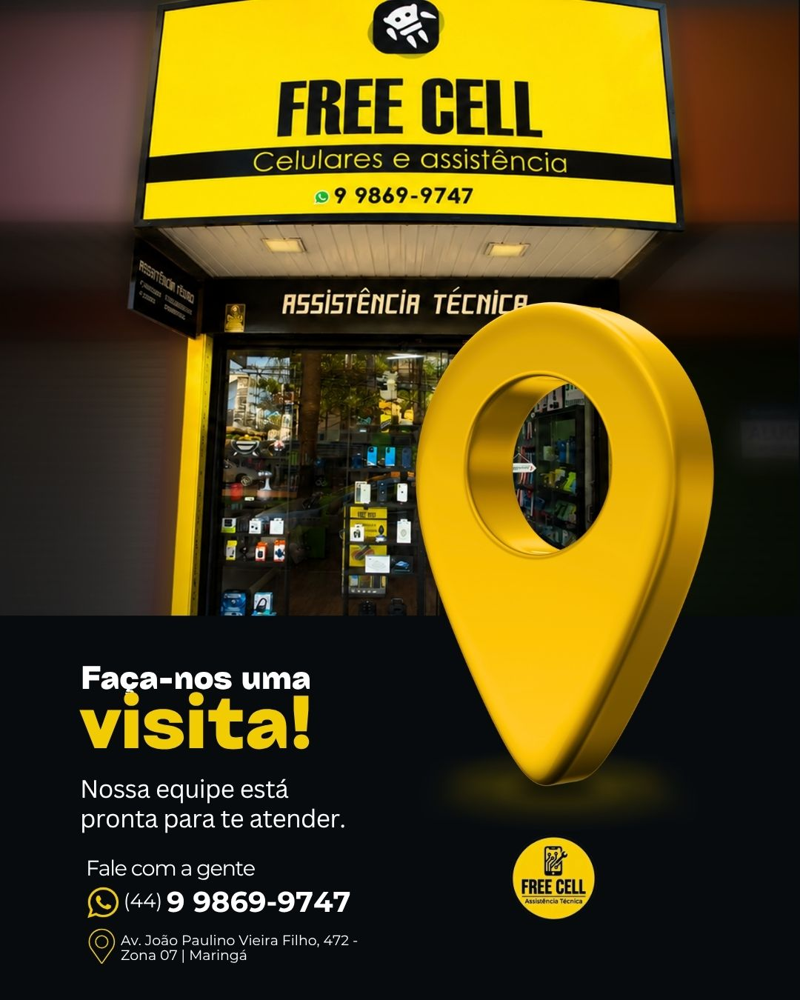
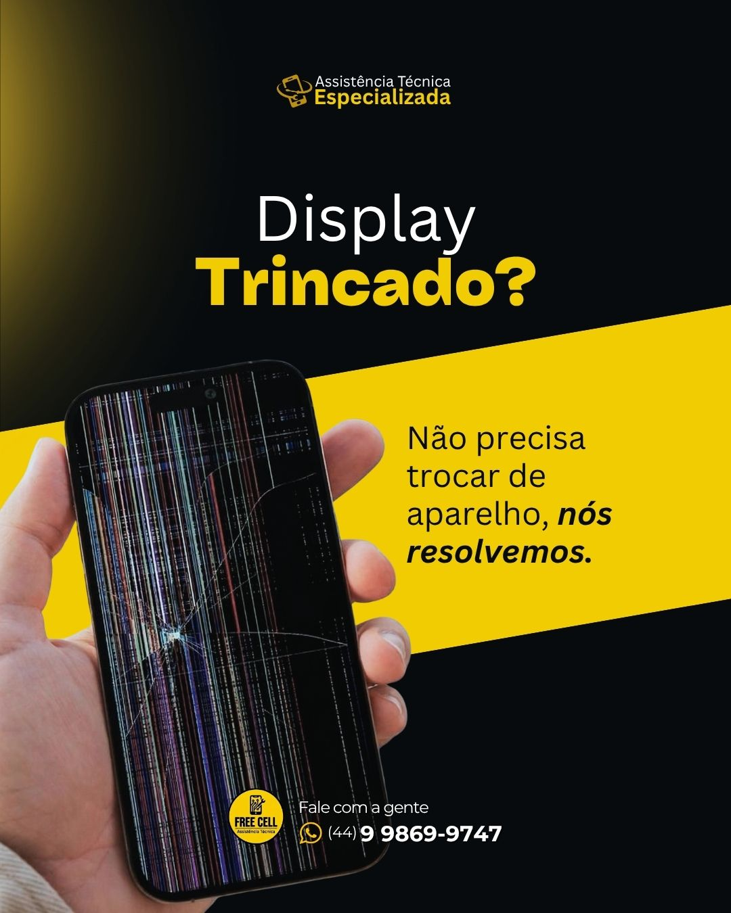
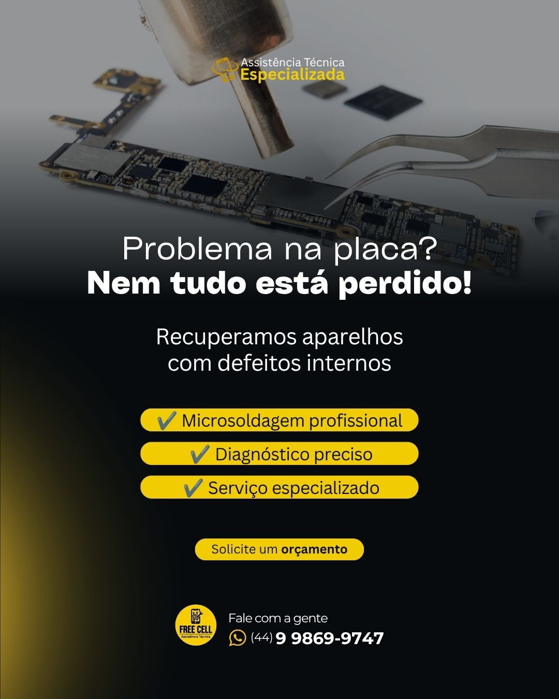
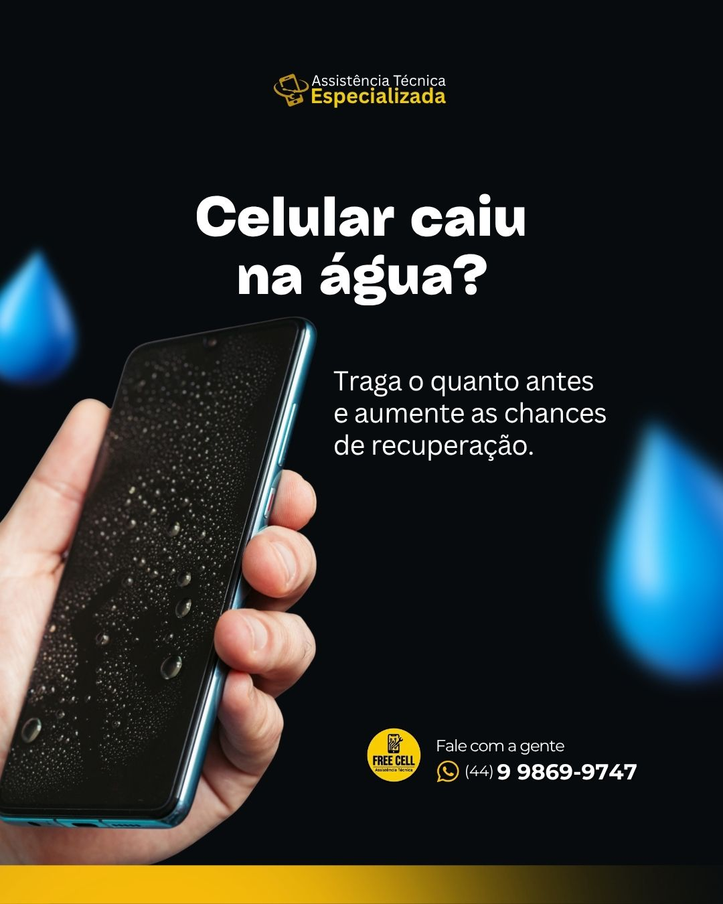

Troca de tela e display
Avaliação de telas trincadas, touch com falhas, manchas e aparelhos sem imagem.
Consultar pelo WhatsAppAssistência técnica em Maringá
Assistência técnica especializada em celulares, smartphones, tablets, iPads e smartwatches, com atendimento direto pelo WhatsApp e avaliação técnica na loja física.

Principais serviços
Fale pelo WhatsApp, explique o que aconteceu e receba orientação para a avaliação do aparelho.
Avaliação de telas trincadas, touch com falhas, manchas e aparelhos sem imagem.
Consultar pelo WhatsAppAnálise de baixa autonomia, desligamentos inesperados e sinais de bateria estufada.
Consultar pelo WhatsAppVerificação de carregamento intermitente, lento ou sem funcionamento.
Consultar pelo WhatsAppDiagnóstico de falhas eletrônicas e serviços de microssoldagem conforme avaliação.
Consultar pelo WhatsAppAvaliação para substituição de tampas quebradas, soltas ou danificadas.
Consultar pelo WhatsAppAnálise de câmera sem foco, com manchas, tremores ou ausência de imagem.
Consultar pelo WhatsAppManutenção de telas, baterias, conectores e outras falhas em tablets e iPads.
Consultar pelo WhatsAppAvaliação de tela, bateria, carregamento e funcionamento de relógios inteligentes.
Consultar pelo WhatsAppComo funciona
Informe o modelo do aparelho e descreva o problema com o máximo de clareza.
A equipe orienta os próximos passos e indica quando a avaliação presencial é necessária.
O aparelho é analisado para identificar a origem do defeito e o serviço indicado.
Você recebe a avaliação antes da execução e decide como quer prosseguir.
Estrutura e serviços



Por que escolher a Free Cell
A Free Cell atende diferentes tipos de aparelho e defeito, com loja física em Maringá e contato direto pelo WhatsApp.
Prova social
A página evita depoimentos fictícios e direciona o visitante para falar com a loja ou consultar os canais oficiais da Free Cell.
Cuidados preventivos
Orientações educativas para preservar o aparelho. Elas não substituem uma avaliação técnica.
Localização e horário
Perguntas frequentes
Converse com a equipe da Free Cell, explique o que aconteceu e solicite uma avaliação.
Falar com a Free Cell agora